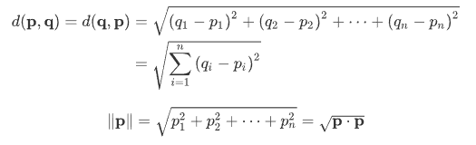
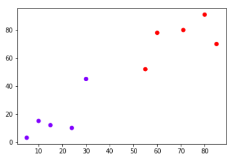
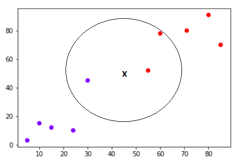
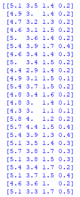
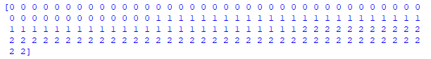
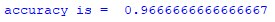
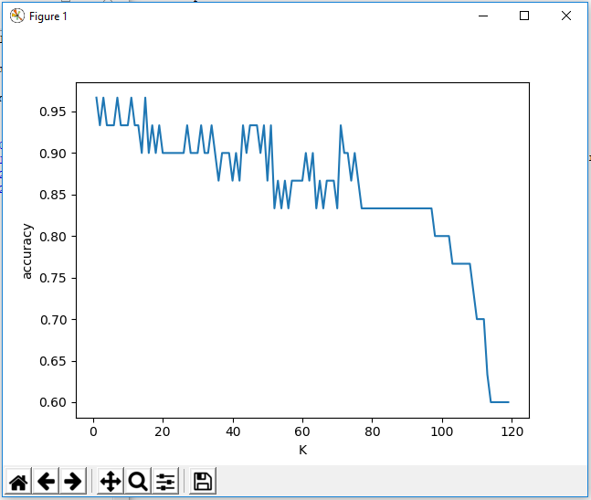

K-Nearest Neighbors¶
Definisi K-Nearest Neighbors¶
Algoritma K-Nearest Neighbors (KNN) adalah salah satu metode yang digunakan dalam implementasi machine learning. KNN dapat lebih mudah dipraktikkan pada bentuk algoritma dasar, namun implementasinya perlu menyelesaikan proses klasifikasi yang dirasa agak rumit bagi sebagian orang. Pada dasarnya, penggunaan algoritma ini tidak memerlukan pelatihan khusus. Orang awam juga dapat mempraktikkan dengan panduan program manual.
Dalam mengklasifikasikan data baru, KNN ini perlu fakta/ data yang sudah ada yang digunakan sebagai data training sebagai acuan klasifikasi. KNN menjadi algoritma pembelajaran non-parametrik, maksudnya yaitu metode ini tidak menjadi sebuah asumsi tentang apa pun dengan data yang menjadi acuan klasifikasi. KNN menjadi sebuah fitur yang sangat berguna karena sebagian besar data dunia nyata tidak benar-benar mengikuti asumsi teoretis, misalnya: linear-separability, uniform distribution, dll.
Pembahasan pada halaman ini akan melihat bagaimana KNN dapat diimplementasikan dengan library "Scikit-Learn Python". Namun, kita juga perlu tahu bagaimana teori dari metode KNN ini dan bagaimana respon mengenai pro dan kontra dari algoritma tersebut.
Dasar Teori¶
Algoritma KNN adalah salah satu yang paling sederhana dari semua algoritma machine learning. Ini hanya menghitung jarak dari titik data baru ke semua titik data pelatihan lainnya. Jarak dapat dari jenis apa pun, misalnya: Euclidean.
Rumus Euclidean Distance:

Kemudian akan memilih titik data K-terdekat, di mana K dapat berupa bilangan bulat apa pun. Kemudian akan diberikan titik data ke kelas tempat mayoritas titik data K berada.
Mari kita lihat algoritma ini dalam contoh sederhana, misalkan Anda memiliki dataset dengan dua variabel, yang ketika diplot, terlihat seperti pada gambar berikut:

Tugas Anda adalah untuk mengklasifikasikan titik data baru dengan 'X' ke dalam kelas "Biru" atau "Merah". Nilai koordinat titik data adalah x = 45 dan y = 50. Misalkan nilai K adalah 3. Algoritma KNN dimulai dengan menghitung jarak titik X dari semua titik. Ia kemudian menemukan 3 titik terdekat dengan jarak paling sedikit ke titik X. Ini ditunjukkan pada gambar di bawah ini. Tiga titik terdekat telah dilingkari.

Langkah terakhir dari algoritma KNN adalah untuk menetapkan titik baru ke kelas yang dimiliki mayoritas tiga titik terdekat. Dari gambar di atas kita dapat melihat bahwa dua dari tiga titik terdekat milik kelas "Merah" sementara satu milik kelas "Biru". Oleh karena itu titik data baru akan diklasifikasikan sebagai "Merah".
Pro dan Kontra KNN¶
Pro
- Sangat mudah diimplementasikan.
- KNN tidak memerlukan training sebelum membuat prediksi realtime. Ini membuat algoritma KNN jauh lebih cepat daripada algoritma lain yang membutuhkan training mis. SVM, regresi linier, dll.
- Karena algoritma tidak memerlukan training sebelum membuat prediksi, data baru dapat ditambahkan dengan mulus.
- Hanya ada dua parameter yang diperlukan untuk mengimplementasikan KNN yaitu nilai K dan fungsi jarak (mis. Euclidean atau Manhattan dll.)
Kontra
- Algoritma KNN tidak bekerja dengan baik dengan data dimensi tinggi karena dengan sejumlah besar dimensi, menjadi sulit bagi algoritma untuk menghitung jarak di setiap dimensi.
- Algoritma KNN memiliki cost prediksi tinggi untuk kumpulan data besar. Ini karena dalam dataset besar cost jarak penghitungan antara titik baru dan setiap titik yang ada menjadi lebih tinggi.
- Terakhir, algoritma KNN tidak bekerja dengan baik dengan fitur kategorikal karena sulit untuk menemukan jarak antara dimensi dengan fitur kategorikal.
Implementasi Program¶
Pada bagian ini, membahas bagaimana implementasi algoritma k-nearest neighbors dengan Scikit-Learn Python. Kita akan menggunakan dataset iris yang terkenal untuk contoh KNN ini. Dataset terdiri dari empat atribut: sepal-width, sepal-length, petal-width dan petal-length. Ini adalah atribut dari jenis spesifik tanaman iris. Fungsinya adalah untuk memprediksi kelas tanaman ini. Ada tiga kelas dalam dataset: Iris-setosa, Iris-versicolor dan Iris-virginica. Rincian lebih lanjut dari dataset tersedia di sini.
Berikut langkah-langkah implementasi KNN:
[1] Mengimpor Library python
import pandas as pd
import matplotlib.pyplot as plt
import numpy as np[2] Mengimpor Dataset Untuk mengimpor dataset dan memuatnya dalam program, jalankan kode berikut:
from sklearn import datasets
from sklearn.linear_model import logistic_regression_path
data_iris=datasets.load_iris()
print(data_iris.data)
print(data_iris.target)Hasilnya:


[3] Split Dataset Untuk membagi dataset menjadi data training dan data testing dalam program, jalankan kode berikut:
from sklearn.model_selection import train_test_split
x_train, x_test, y_train, y_test=train_test_split(data_iris.data,data_iris.target,test_size=0.2)[4] Hitung Akurasi Untuk menghitung akurasi dalam program, jalankan kode berikut:
from sklearn.neighbors import KNeighborsClassifier
clf=KNeighborsClassifier(n_neighbors=3).fit(x_train,y_train)
from sklearn.metrics import accuracy_score
print("accuracy is = ", accuracy_score(y_test,clf.predict(x_test)))
[5] Menampilkan grafik program Untuk grafik perhitungan dalam program, jalankan kode berikut:
accuracy_values=[]
for x in range(1,x_train.shape[0]):
clf=KNeighborsClassifier(n_neighbors=x).fit(x_train,y_train)
accuracy=accuracy_score(y_test,clf.predict(x_test))
accuracy_values.append([x,accuracy])
pass
accuracy_values=np.array(accuracy_values)
plt.plot(accuracy_values[:,0],accuracy_values[:,1])
plt.xlabel("K")
plt.ylabel("accuracy")
plt.show()Hasilnya :

catatan: Grafik yang ditampilkan setiap menjalankan program akan dapat berbeda karena data diambil secara random.
Kesimpulan¶
- KNN adalah algoritma klasifikasi yang sederhana dan mudah diimplementasikan.
- Algoritma KNN telah banyak digunakan untuk menemukan kesamaan dokumen dan pengenalan pola.
Untuk tutorial lainnya klik di sini.
Referensi¶
[2] https://stackabuse.com/k-nearest-neighbors-algorithm-in-python-and-scikit-learn/